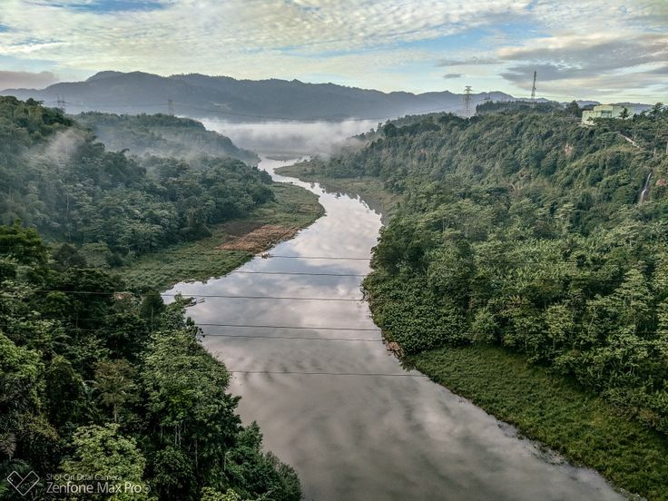
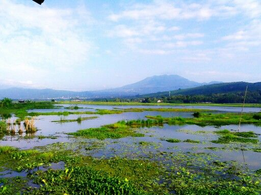
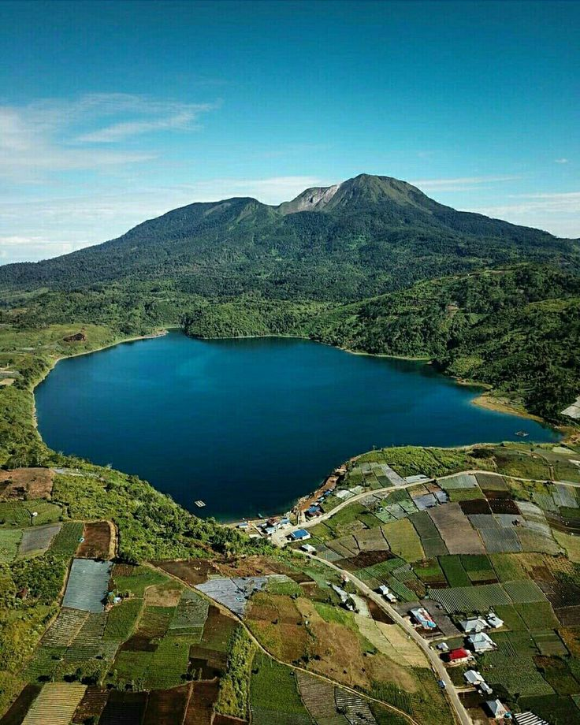
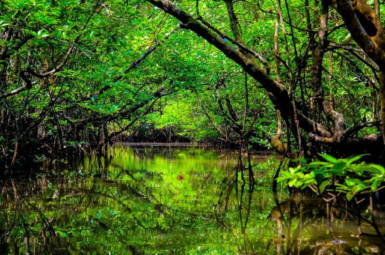
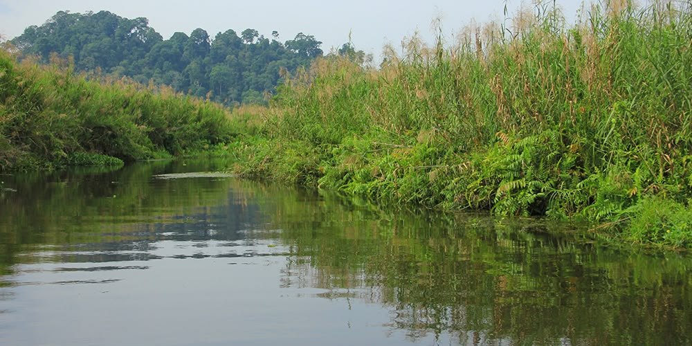

Mengenal berbagai jenis habitat lahan basah yang menjadi tempat hidup bagi tumbuhan, hewan, dan berbagai organisme.
Lahan basah memiliki berbagai bentuk lingkungan dengan karakteristik dan kehidupan yang berbeda-beda.

Sungai merupakan perairan yang mengalir dan menjadi habitat bagi berbagai jenis ikan, tumbuhan air, serangga, serta hewan lainnya.

Rawa merupakan wilayah yang tergenang air secara terus-menerus atau berkala dan memiliki berbagai tumbuhan serta hewan yang mampu beradaptasi dengan kondisi basah.

Danau merupakan perairan yang dikelilingi oleh daratan dan dapat menjadi tempat hidup bagi ikan, tumbuhan air, burung, serta organisme lainnya.

Hutan mangrove berada di wilayah pesisir dan dipengaruhi oleh air laut. Habitat ini menjadi tempat hidup dan berkembang bagi berbagai jenis tumbuhan dan hewan.
Setiap habitat lahan basah memiliki kondisi lingkungan yang mendukung kehidupan organisme tertentu. Perbedaan air, tanah, tumbuhan, dan kondisi lingkungan membuat setiap habitat memiliki keanekaragaman hayati yang berbeda.

Menjadi tempat hidup dan berlindung bagi berbagai jenis tumbuhan dan hewan.
Menyediakan berbagai sumber makanan bagi organisme yang hidup di dalamnya.
Mendukung hubungan antarorganisme dan membantu menjaga keseimbangan ekosistem.
Tumbuhan dan hewan saling berhubungan dalam lingkungan lahan basah untuk membentuk ekosistem yang seimbang.
Tumbuhan seperti mangrove, eceng gondok, nipah, dan purun dapat menjadi bagian penting dari habitat lahan basah.
Berbagai hewan memanfaatkan lahan basah sebagai tempat mencari makanan, berlindung, dan berkembang biak.
Air dan tanah menjadi bagian penting yang menyediakan kondisi lingkungan bagi kehidupan organisme di lahan basah.